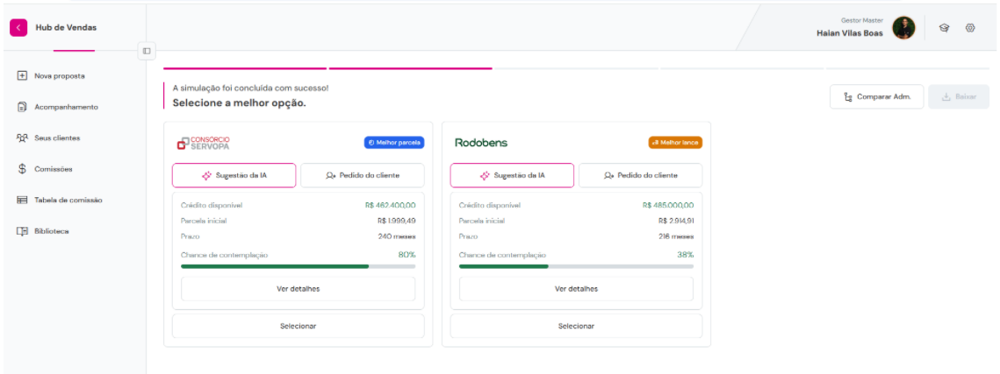
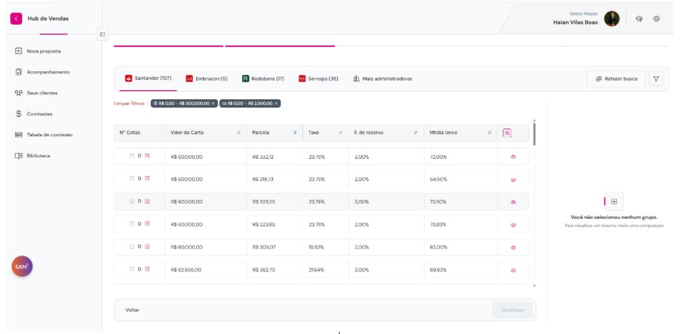
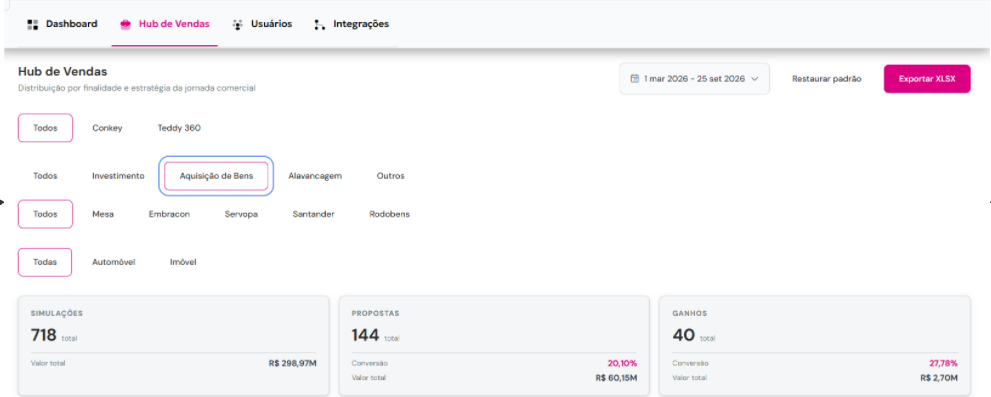

Contexto
O consórcio cresce rápido no Brasil: em 2025 foram 5,16 milhões de cotas vendidas e R$ 500 bilhões em créditos, segundo a ABAC. Mas venda mal feita vira inadimplência: o cliente compra uma parcela que não cabe no bolso ou uma expectativa de contemplação que não vai acontecer, e desiste no meio do caminho.
O vendedor, por sua vez, precisava consultar cada administradora separadamente para comparar grupos, taxas e chances, o que tornava a proposta lenta e pouco embasada.
Fonte: ABAC, Sistema de Consórcios em dezembro de 2025.
O problema
Como ajudar o vendedor a montar uma proposta de qualidade, que caiba no bolso do cliente e tenha expectativa realista de contemplação, comparando vários parceiros de uma vez?
A solução
A jornada parte do objetivo do cliente e de um plano com a parcela que ele consegue pagar. A partir daí, o vendedor escolhe entre dois caminhos que usam as mesmas regras:
- Sugestão da IA: o sistema recomenda as melhores opções entre os parceiros, destacando a de melhor parcela e a de melhor lance, com crédito, prazo e chance de contemplação.
- Pedido do cliente: busca manual em todos os grupos disponíveis por administradora, com filtros de crédito e parcela e comparação de taxa, fundo de reserva e média de lance.
- Comparar administradoras lado a lado antes de fechar a proposta.


O maior desafio: integrar os parceiros
Cada administradora e instituição financeira tem seu jeito de expor grupos, cotas e regras. Algumas oferecem API; outras, não. Para o vendedor ver tudo numa jornada só, foi preciso integrar cada parceiro do jeito que ele permitia.
- Levantei as regras de cada parceiro e o que precisava ser padronizado para caber na mesma tela.
- Defini critérios de aceite por integração, incluindo o que fazer quando um parceiro fica indisponível ou devolve dados incompletos.
- Validei os dados ponta a ponta, comparando o que o parceiro devolvia com o que a tela e a proposta mostravam.
Resultados de março a setembro de 2026
Considerando a finalidade Aquisição de Bens no painel de vendas:
Uma em cada cinco simulações virou proposta, e mais de um quarto das propostas fechou. Com plano e expectativa de contemplação dentro da jornada, a proposta já nasce mais próxima do que o cliente consegue sustentar.

O que aprendi
Em consórcio, uma boa venda é a que continua paga até o fim. Dar ao vendedor contexto, e não só um preço, mudou a qualidade da proposta. E integração é produto: o cliente nunca vê a API ou o robô, mas sente quando um parceiro some da tela.